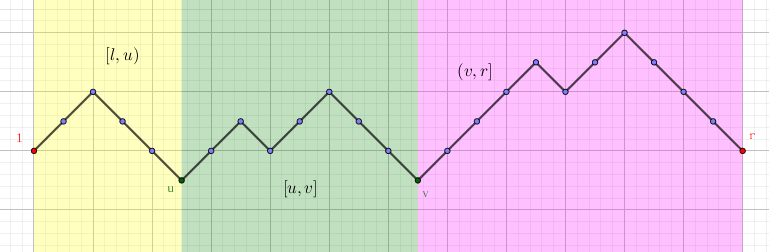

现有一个长度为 $n$ 的仅由 $\texttt{(}$ 和 $\texttt{)}$ 组成的字符串 $A$，你需要对给出的 $q$ 个询问 $(l, r)$，找到一个 $[l, r]$ 中尽量长的子串，使得它是括号匹配的。
你只要对每个询问输出最长的括号匹配的子串的长度即可。
第一行包含两个正整数 $n, q$ ($n, q \leq 4 \times 10^5$)，分别表示字符串长度和询问个数。
第二行是一个长度为 $n$ 的仅由和 $\texttt{(}$ 和 $\texttt{)}$ 组成的字符串。
接下来 $m$ 行，每行包含两个整数 $l, r$，表示询问区间的左右端点，下标从 $1$ 开始。
对于每个询问，输出一行一个整数，表示最长的子串的长度。
对于括号匹配，还是按照套路地 (把 $\texttt{(}$ 看作 $1$，$\texttt{)}$ 看作 $-1$) 求个前缀和 $s_i$。那么，如果一段区间 $[l, r]$ 是匹配的，当且仅当 $s_{l-1} = s_r = \min\limits_{l-1 \leq i \leq r} s_i$。(为了方便，下文的 $l$ 对应这里的 $l-1$)
那么如何求最长的匹配子串呢？我们首先求出区间 $s_l, s_{l+1}, \cdots, s_r$ 中的最小值 $p$，并记 $s_u, s_v$ 为它 (在区间中) 出现的最左端和最右端的位置 (可能 $u = v$)，那么，这两个下标将区间 $[l, r]$ 分为了三段 ($[l, u), [u, v], (v, r]$)，如下图：
首先，区间 $[u, v]$ 显然是匹配的 (由于是最小值，因此满足上面的要求)。并且可以发现，没有一段匹配的区间可以穿过两个区间 (因为 $u, v$ 是最左和最右的最小值)，因此答案一定在这三段之内。显然中间一段的答案没有意义，那么只需在左右两端中更新答案即可。
以 $[l, u)$ 为例，对任意一个 $i \in [l, u)$，它向右所能匹配到的最远的下标 $j$ 一定 $< u$ (因为 $s_u < s_i$)，于是，我们只需要计算出 $[l, u)$ 区间内，每个 $i$ 尽可能贪心地向右匹配，所能匹配到的最大值，$(v, r]$ 区间同理 (只是向左匹配)。
综上，最后更新得到的值就是答案。对于枚举 $[l, r]$ 中最小值及其出现的位置，由于不带修改，可以用 ST 算法完成；对于两端区间的值，那么可以 $O(n)$ 预处理出每个点尽可能贪心地向右/向左匹配，所能匹配到的最大长度，也能用 ST 算法完成 (一共需要 $4$ 个 ST 表，当然也可以用线段树)。
总时间复杂度为 $O(n \log n + q)$ (ST 表) 或 $O \left( (n + q) \log n \right)$ (线段树)。
#include <bits/stdc++.h>
#define N 512202
#define LN 20
#define lg2(x) (31 - __builtin_clz(x))
#define next Next
using namespace std;
typedef int sparse_table[LN][N];
char token[N];
int storage[N << 1], *scx = storage + N;
int n, q, i, j, k;
int x, y, l, r, ans;
int h[N], next[N], prev[N];
sparse_table stl, str, stu, stv;
inline void up(int &x, const int y) {x < y ? x = y : 0;}
inline int max(const int x, const int y) {return x < y ? y : x;}
inline int hmin(const int x, const int y) {return h[x] <= h[y] ? x : y;}
void init(){
int i, *l = stl[0], *r = str[0], *u = stu[0], *v = stv[0];
for(i = 0; i < n; ++i) h[i + 1] = h[i] + (token[i] == 40 ? 1 : -1);
for(i = 0; i <= n; ++i) l[i] = r[i] = i;
memset(next, -1, sizeof next);
memset(prev, -1, sizeof prev);
memset(storage, -1, sizeof storage);
scx[0] = 0;
for(i = 1; i <= n; ++i){
if(h[i] < h[i - 1]) scx[h[i - 1]] = -1;
if(~scx[h[i]]) next[prev[i] = scx[h[i]]] = i;
scx[h[i]] = i;
}
for(i = n; i >= 0; --i){
if(~next[i] && ~next[next[i]]) next[i] = next[next[i]];
u[i] = (~next[i] ? next[i] - i : 0);
}
for(i = 0; i <= n; ++i){
if(~prev[i] && ~prev[prev[i]]) prev[i] = prev[prev[i]];
v[i] = (~prev[i] ? i - prev[i] : 0);
}
}
void build_st_table(){
int i, j, k = n, *fl, *fr, *fu, *fv;
int *gl = stl[0], *gr = str[0], *gu = stu[0], *gv = stv[0];
for(j = 0; 1 << j + 1 <= n + 1; ++j){
fl = gl; gl = stl[j + 1]; fr = gr; gr = str[j + 1];
fu = gu; gu = stu[j + 1]; fv = gv; gv = stv[j + 1];
k -= 1 << j;
for(i = 0; i <= k; ++i){
gl[i] = hmin(fl[i], fl[i + (1 << j)]);
gr[i] = hmin(fr[i + (1 << j)], fr[i]);
gu[i] = max(fu[i], fu[i + (1 << j)]);
gv[i] = max(fv[i], fv[i + (1 << j)]);
}
}
}
inline int range(int L, int R, int (*st)[N]){
int D = R - L, c = lg2(D);
return max(st[c][L], st[c][R - (1 << c)]);
}
int main(){
scanf("%d%d%s", &n, &q, token);
init();
build_st_table();
for(; q; --q){
scanf("%d%d", &x, &y);
int D = (++y) - (--x), c = lg2(D);
l = hmin(stl[c][x], stl[c][y - (1 << c)]);
r = hmin(str[c][y - (1 << c)], str[c][x]);
ans = r - l;
if(x < l) up(ans, range(x, l, stu));
if(r + 1 < y) up(ans, range(r + 1, y, stv));
printf("%d\n", ans);
}
return 0;
}
坑1：注意使用 ST 表的时候尽量把小的 ($\log n$ 的) 一维放前面，大的 ($n$ 的) 一维放后面，最后使用指针优化。